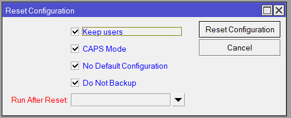

Figura 01: Janela de Reset Configuration do Mikrotik
1. Keep users (Manter usuários)
- O que faz: Preserva o banco de dados de usuários e senhas criados no roteador.
- Quando usar: Útil se você tem um usuário
admin com senha forte ou outros usuários com permissões específicas e não quer perdê-los.
- Se desmarcada: Todos os usuários são apagados, voltando para o usuário
admin padrão com a senha da etiqueta (ou em branco).
2. CAPS Mode (Modo CAPS)
- O que faz: Inicia o roteador no modo Controlled Access Point System, para ser gerenciado por um controlador central (CAPsMAN).
- Quando usar: Apenas em redes corporativas com um controlador CAPsMAN.
- Para uso doméstico, esta opção deve estar sempre DESMARCADA.
3. No Default Configuration (Sem Configuração Padrão)
- O que faz: Esta é uma das opções mais importantes. Decide se o roteador aplicará as configurações de fábrica (IP, firewall, etc.) após o reset.
- Se marcada: O roteador ficará completamente zerado, uma "tela em branco", sem IP e sem regras. O acesso será possível apenas via WinBox pelo endereço MAC.
- Se desmarcada: O roteador reaplicará a configuração padrão de fábrica, voltando a ter o IP
192.168.88.1 e as funcionalidades básicas. Para a maioria dos usuários, o correto é deixar esta opção desmarcada.
4. Do Not Backup (Não Fazer Backup)
- O que faz: Impede que o roteador crie um arquivo de backup automático da configuração atual antes de se resetar.
- Se marcada: Nenhum backup será criado. A configuração será perdida permanentemente.
- Se desmarcada: Um backup (
auto-before-reset.backup) será salvo no menu Files. É uma ótima "rede de segurança".
5. Run After Reset (Executar Após o Reset)
- O que faz: Permite especificar um arquivo de script (
.rsc) para ser executado automaticamente após a conclusão do reset.
- Quando usar: Ferramenta de automação para usuários avançados que desejam aplicar uma configuração base personalizada em vários dispositivos de forma rápida.
Resumo de Cenários Comuns
Cenário 1: "Quero voltar ao estado de fábrica, como veio na caixa"
- Desmarque
Keep users
- Desmarque
CAPS Mode
- Desmarque
No Default Configuration
- Desmarque
Do Not Backup (por segurança)
Cenário 2: "Quero apagar tudo e começar do zero" (Avançado)
- Marque ou desmarque
Keep users
- Desmarque
CAPS Mode
- Marque
No Default Configuration
- Atenção: O acesso por IP será perdido!